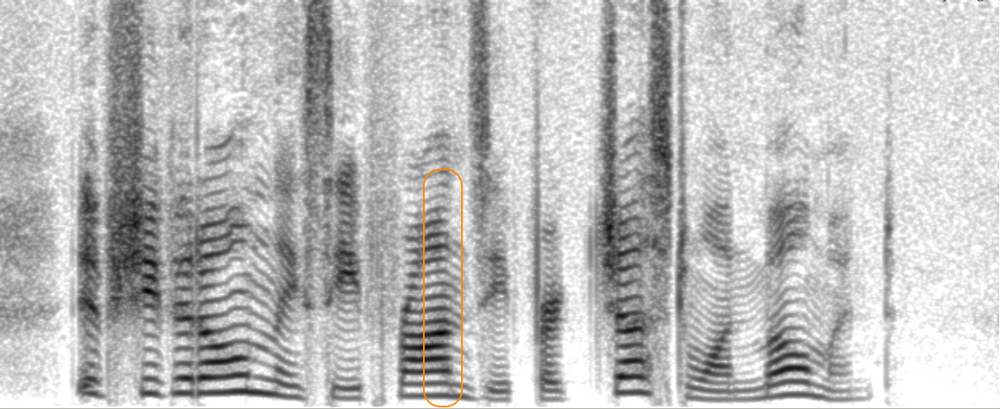

Self-Guidance: Training VQ-VAE Decoders to be Robust to Quantization Artifacts for High-Fidelity Neural Speech Codec
Anonymous Authors
Abstract: Neural speech codecs, predominantly based on Vector-Quantized Variational Autoencoders (VQ-VAEs), serve as fundamental audio tokenizers for speech large language models (SLLMs). However, their reconstruction fidelity is limited by quantization errors introduced during latent space discretization. Existing solutions typically increase model complexity through larger codebooks or hierarchical quantization, which subsequently intensify the modeling challenge for downstream SLLMs. Inspired by the key insight that the codec decoder produces superior output from continuous pre-quantize embeddings, we propose a novel self-guided training mechanism that addresses this problem by enhancing decoder robustness rather than modifying the quantization process. Our method introduces an additional training objective that aligns the decoder's intermediate features when processing both quantized tokens and continuous pre-quantized embeddings through a feature-mapping loss. Extensive experiments on XCodec2 demonstrate that self-guidance consistently improves reconstruction quality across various codebook sizes and quantization techniques (FSQ, SimVQ), achieving state-of-the-art performance for low-bitrate speech codecs. The method requires minimal additional training cost and no inference-time modifications, offering an efficient solution for high-fidelity neural audio coding. Remarkably, our approach enables a 4× reduction in codebook size while maintaining comparable fidelity. Downstream text-to-speech experiments confirm that this reduction significantly improves LLM-based synthesis performance by simplifying the token modeling space.

Figure 1: Illustration of the VQ-VAE architecture and the proposed self-guidance (SG) mechanism
Reconstruction results from different models
We provide a collection of audio samples, including the ground truth (GT) and the reconstruction results from following neural codec models:
| Abbreviation | Frame rate | Total bitrate | Description |
|---|---|---|---|
| GT | - | - | Ground truth audio |
| BigCodec.40Hz | 40Hz | 520 bps | A compact BigCodec model with a lower frame rate, serving as the lower bound for comparison |
| XCodec2 | 50Hz | 800 bps | Default XCodec2 model, serving as a baseline |
| XCodec2+SG | 50Hz | 800 bps | XCodec2 model with the proposed self-guidance |
| BigCodec | 80Hz | 1040 bps | Default BigCodec model, serving as the upper limit |
Each model is trained on the LibriSpeech training dataset (EN) for 600,000 iterations with 8 Nvidia RTX 4090 GPUs. Audio samples are drawn from the LibriSpeech test-clean subset, together with the text transcripts. We encourage listeners to pay attention to the differences in clarity, and presence of artifacts among the various reconstructions.
| Text script | GT | BigCodec.40Hz | XCodec2 | XCodec2+SG | BigCodec |
|---|---|---|---|---|---|
| hello bertie any good in your mind | |||||
| if she could only see phronsie for just one moment | |||||
| father thee's unjust to philip he's going into business | |||||
| i say sir harry the little girl's going famously to night isn't she | |||||
| been looking up tooms county | |||||
| it's a stock company and rich | |||||
| you are mate replied the sailor | |||||
| i don't want to stand around and look on | |||||
| mister jago is an american philip | |||||
| don't worry sizzle dear it'll all come right pretty soon |
Qualitative demonstration on the fidelity enhancement from self-guidance
In this case study, we analyze a group of audio samples selected from the above table. By comparing audio samples with and without self-guidance, we qualitatively demonstrate how the self-guidance mechanism reduces quantization artifacts and enhances the perceptual quality of reconstructed speech.
Case 1: Smeared harmonics
Description: In this case, the harmonics structure of the speech reconstructed by the XCodec2 baseline is blurry at the word "phronsie", leading to bubbly artifacts in the audio. While with the proposed self-guidance mechanism, the reconstructed speech shows clearer and sharper harmonics structure.
Text script: "if she could only see phronsie for just one moment"
| Source | Audio | Spectrogram |
|---|---|---|
|
GT |
||
|
XCodec2 |
||
|
XCodec2+SG |
 |
Case 2: Pitch spike
Description: In this case, there is a undesired pitch spike at the word "sir" in the speech reconstructed by the XCodec2 baseline, where the fundamental frequency suddenly bumps up. While with the proposed self-guidance mechanism, this issue is effectively mitigated.
Text script: "i say sir harry the little girl's going famously to night isn't she"
| Source | Audio | Spectrogram |
|---|---|---|
|
GT |
||
|
XCodec2 |
||
|
XCodec2+SG |
Case 3: Oversmoothed harmonics shape
Description: In this case, the high-order harmonics of the speech reconstructed by the XCodec2 baseline are oversmoothed to a flat line at the phrase "you are mate", leading to repeating "echoes" in the audio. While with the proposed self-guidance mechanism, the GT harmonics is better preserved.
Text script: "you are mate, replied the sailor"
| Source | Audio | Spectrogram |
|---|---|---|
|
GT |
||
|
XCodec2 |
||
|
XCodec2+SG |
Quantitative demonstration on the functionality of self-guidance
In this section, we reveal the functionality of self-guidance by providing statistic evidence on 2 key measures in Figure 1:
- Quantization error: the error between the pre-quantize latent embedding and quantized token embedding
- Hidden feature alignment MSE: the error between decoder output hidden features from the pre-quantize latent embedding and quantized token embedding
We run inference on the LibriSpeech test-clean subset using models with varying codebook sizes, with and without self-guidance. The results show that self-guidance casts little influence on quantization error, but significantly reduces hidden feature alignment MSE. This finding verifies that self-guidance indeed helps to align the decoder output hidden features, enhancing robustness to quantization error, rather than directly reducing quantization error.
Quantization Error
As shown in Figure 2, the distribution of quantization error is relatively stable with and without self-guidance, indicating that self-guidance does not significantly impact this metric. This is consistent with the statistics in the following table.
| Codebook size | With self-guidance | Quantization Error mean | Quantization Error std |
|---|---|---|---|
| 65536 | No | 0.858 | 0.120 |
| 65536 | Yes | 0.851 | 0.121 |
| 16384 | No | 0.798 | 0.121 |
| 16384 | Yes | 0.799 | 0.120 |
| 8192 | No | 0.741 | 0.120 |
| 8192 | Yes | 0.744 | 0.121 |
Figure 2: Quantization error histogram for different codebook sizes with and without self-guidance
Hidden feature alignment MSE
As shown in Figure 3, there is a obvious increase in the portion of higher values when self-guidance is not activated (Note that the x-axis is of log-scale), which is harmful to faithful reconstruction. As also presented in the following table, where self-guidance significantly reduces both mean values and standard deviations.
| Codebook size | With self-guidance | Hidden MSE mean | Hidden MSE std |
|---|---|---|---|
| 65536 | No | 9.439 | 29.203 |
| 65536 | Yes | 5.854 | 13.712 |
| 16384 | No | 13.551 | 59.137 |
| 16384 | Yes | 4.958 | 5.863 |
| 8192 | No | 23.605 | 109.458 |
| 8192 | Yes | 4.197 | 6.865 |
Figure 3: Hidden feature alignment MSE histogram for different codebook sizes with and without self-guidance